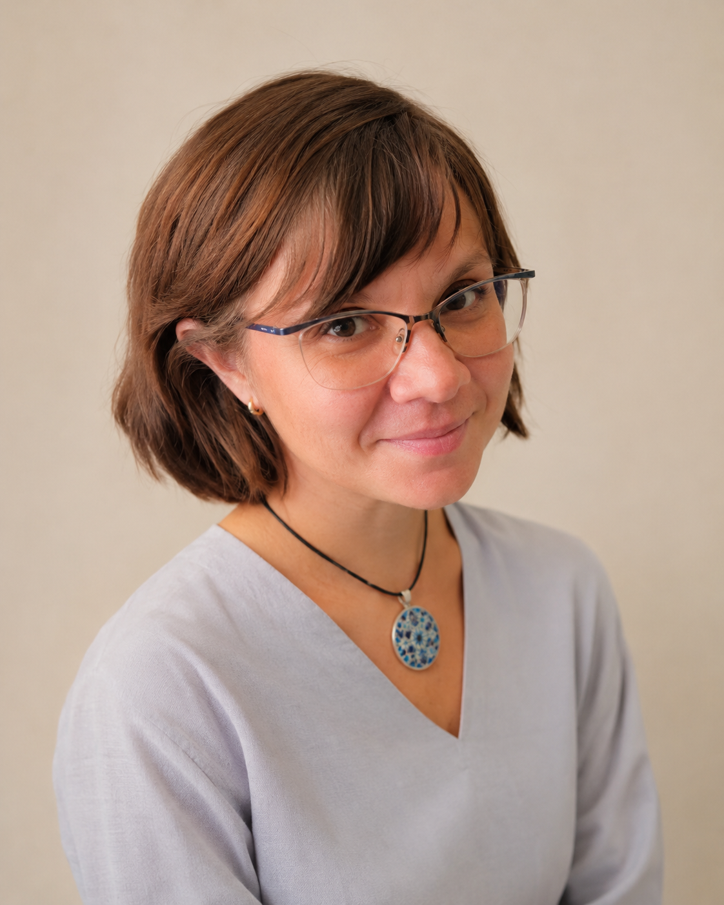

Онлайн
Основной формат консультаций
5 000 ₽
60 минут
Клинический психолог, системный семейный психолог, детский психолог, терапевт искусствами, телесно-ориентированный психолог, EMDR-терапевт.
В работе сочетает подходы клинической и системной семейной психологии, терапии экспрессивными искусствами, телесно-ориентированной терапии и EMDR.
Записаться на знакомствоВсе специалисты
Основной формат консультаций
60 минут
Встречи по предварительному согласованию, ориентировочно раз в месяц.
Возможность и условия очной встречи уточняются при записи.
Работа с детьми и подростками, семейное консультирование, кризисные состояния, психологическая травма, психосоматика, терапия искусствами и EMDR. Подход и формат работы обсуждаются индивидуально с учётом запроса.